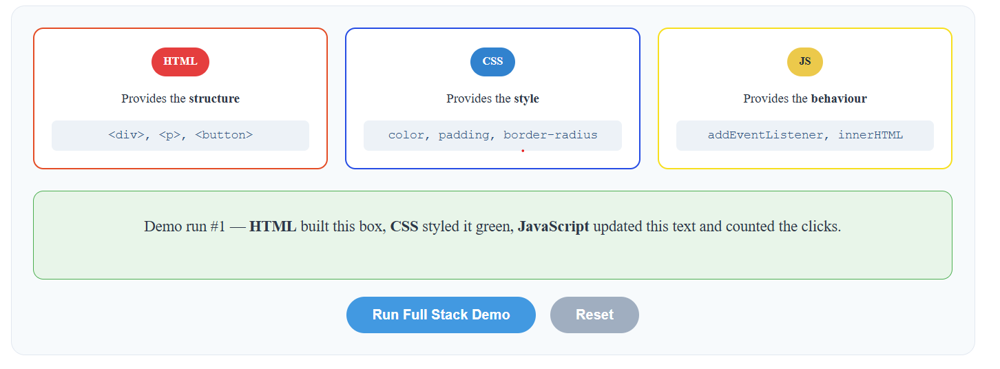

Full Stack Development refers to the practice of developing both the frontend (client-side) and backend (server-side) of a web application. A full stack developer has the skills to build a complete web application from start to finish, including the user interface, server logic and database.
The term "stack" refers to the collection of technologies used together to build a web application. A full stack developer understands how all these layers work together to deliver a functional product to the user.
Every web application is made up of three main layers. Each layer has a specific role and uses different technologies:
What the user sees and interacts with in the browser
HTML · CSS · JavaScriptLogic that runs on the server, handles requests and processes data
Node.js · PHP · PythonStores and manages the application data
MySQL · PostgreSQL · MongoDBClick the button below to see all three layers in action:
Provides the structure
<div> <p> <button>
Provides the style
color, padding, border-radius
Provides the behaviour
addEventListener, innerHTML

Figure 1: Screenshot showing the Full Stack demonstration with three layers working together
// Frontend (HTML) provides structure
<div class="demo-layer">
<h3>Frontend</h3>
<p>HTML, CSS, JavaScript</p>
</div>
// Backend simulation with JavaScript
function runDemo() {
let count = localStorage.getItem('demoCount') || 0;
count++;
document.getElementById('demoResult').innerHTML =
"Demo run #" + count + " — Full stack application executed!";
}
The demonstration above shows how the three layers of full stack development work together:
Full Stack Development combines frontend and backend skills to build complete web applications. Understanding how HTML, CSS, JavaScript work together on the frontend, along with backend technologies and databases, provides a comprehensive foundation for modern web development.